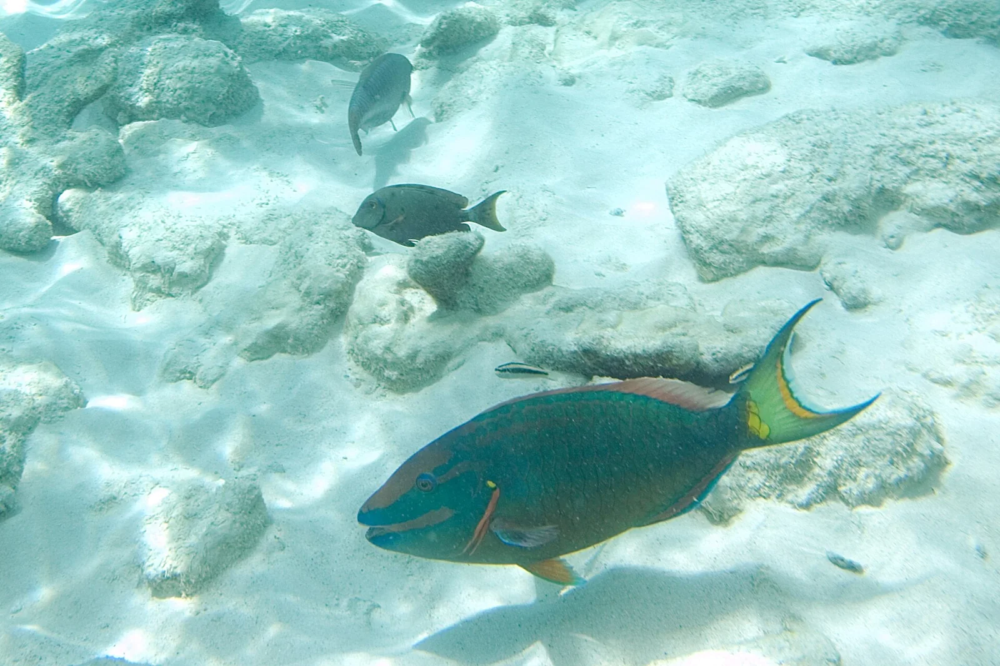

1000 Steps
Côte ouest, Bonaire · plongée, snorkeling

Site de plongée du bord emblématique du parc marin national de Bonaire. Un escalier taillé dans la falaise, d’environ 70 marches seulement malgré son nom, descend vers une petite plage et un récif en pente douce.
- Lieu
- Côte ouest, Bonaire
- Niveau
- Débutant
- Activités
- plongée, snorkeling
- Type d'eau
- Mer / océan
- Coordonnées
- 12.21, -68.32 (position approximative du secteur)
Dangers à connaître
- Escalier raide, pénible à remonter avec l’équipement.
- Entrée sur galets et débris de corail glissants.
Le conseil d'Ocean Buddy
La taxe d’accès au parc marin est obligatoire pour plonger ou snorkeller à Bonaire ; prévois des chaussons pour la plage de débris coralliens.
Ouvrir dans Ocean Buddy Télécharger sur l'App Store
Source : Fiche Ocean Buddy · septembre 2026 · à vérifier localement.